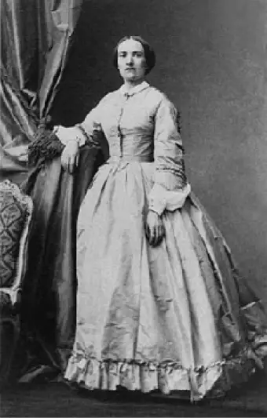

Galerie
Olypme de Gouges
Marie Gouze, connu par le surnom Olypme de Gouges. Auteur de la Déclaration des droits de la femme et de la citoyenne.
Née en 1748 et Morte en 1793
Julie-Victoire Daubie
Julie-Victoire Daubie, est la premier femme a avoir le Bac français
Née 1824 et Morte en 1874
Angela Merkel
Angela Merkel, premier femme Chancelière fédérale d’Allemagne depuis 2005 à 2021 Née en 1954
Marlène coulomb-Gully
Marlène coulomb-Gully, Chercheuse française en communication politique Née en 1958
Edith Cresson
Edith Cresson, est la première femme 1er ministre en France depuis 15 mai 1991– 2 avril 1992 Née 1934